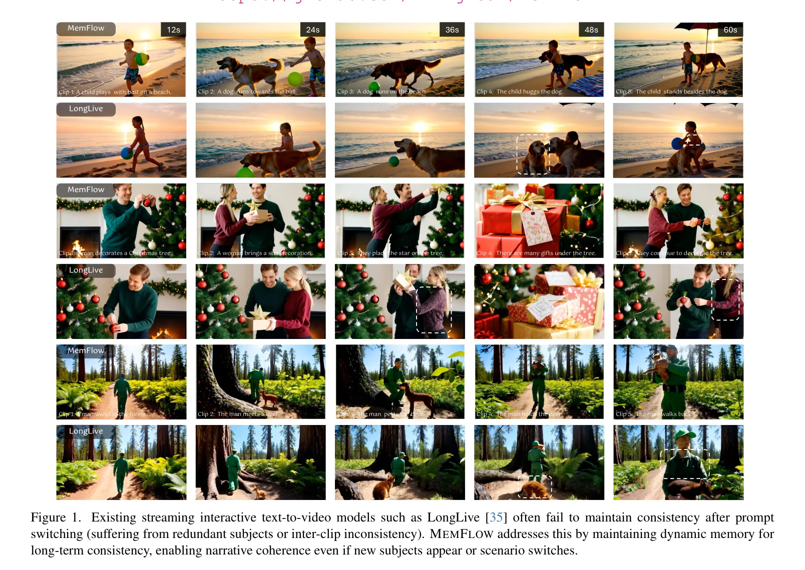
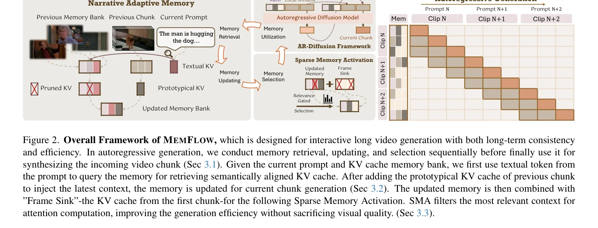
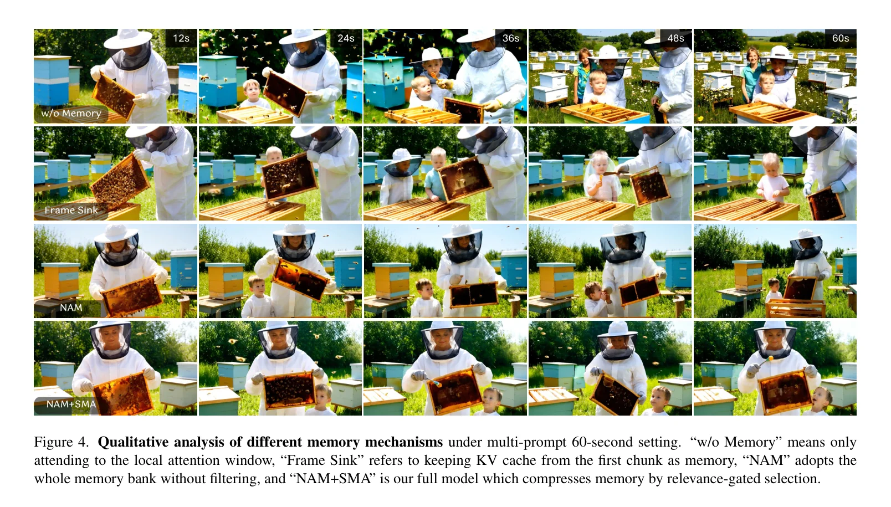
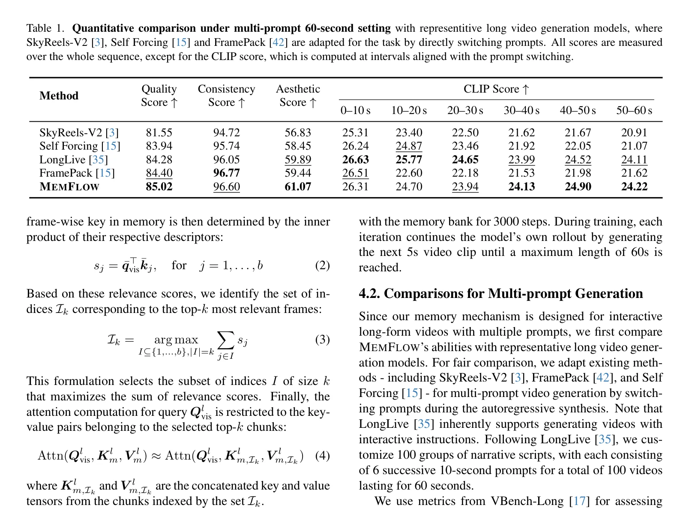
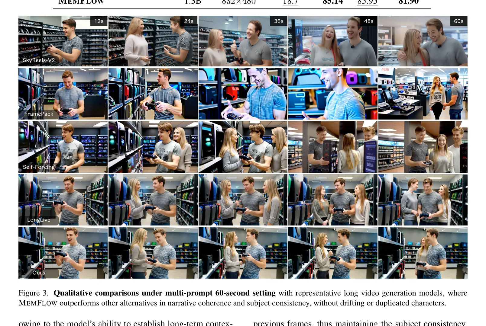
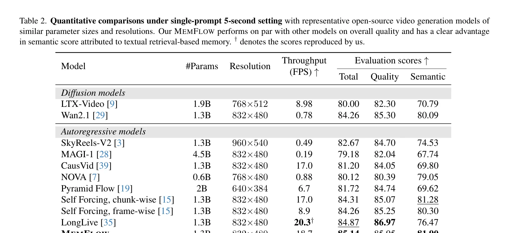
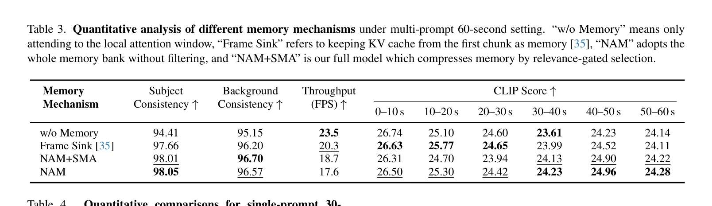
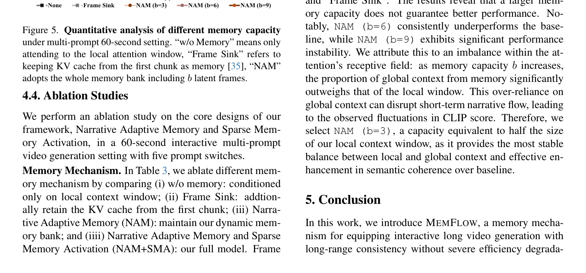
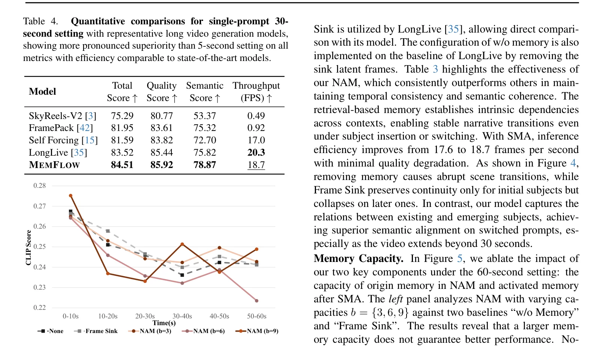

核心挑战：流式长视频的记忆困境
交互式视频生成正成为创意和影视应用的核心技术范式。用户通过流式文本提示（Streaming Prompts）实时引导叙事，模型以自回归方式逐块生成视频片段。然而，这一范式面临一个根本性挑战：如何在长达60秒甚至更久的生成过程中，维持角色、场景和叙事的长期一致性？
现有方法在记忆设计上存在三个根本缺陷：
固定记忆策略
LongLive 仅保留第一个视频块的KV Cache作为"记忆沉没"（Frame Sink），无法动态适应后续提示切换带来的新元素
固定压缩方案
FramePack等方法用固定大小压缩历史帧，关键视觉线索可能被无差别丢弃，尤其在场景转换时

不同待生成的视频片段应当参考不同的历史线索。例如，当提示从"一个孩子在沙滩上玩气球"切换为"一只狗跑向球"时，模型需要从记忆中检索出包含"球"的视觉上下文，而非仅仅保留第一帧。这种语义对齐的动态检索是固定策略无法实现的。
两层约束的交织
记忆设计必须同时满足两个相互竞争的需求：
固定记忆策略（如仅保留首帧）假设所有未来生成都需要相同的上下文，这在交互式多提示场景中是完全错误的。当场景从"室内"切换到"室外"时，首帧的室内场景信息反而会成为干扰。真正的解决方案需要根据语义相关性动态选择记忆内容。
固定策略 vs 自适应记忆策略：MemFlow根据当前提示语义动态检索历史上下文
NAM: 叙事自适应记忆
MemFlow的核心创新是叙事自适应记忆（Narrative Adaptive Memory, NAM）——一种能根据当前提示动态检索语义对齐历史内容的记忆机制。NAM由两个协同子策略组成：语义检索和冗余消除。
整体框架
MemFlow构建在混合自回归-扩散框架之上（基于Wan2.1-T2V-1.3B），每次迭代生成T帧的视频片段。在生成新片段之前，模型执行以下流程：

MemFlow巧妙地利用了自回归扩散模型天然产生的KV Cache作为记忆库的基础结构。这避免了额外的记忆编码器或压缩网络，将记忆管理无缝集成到已有的Transformer注意力机制中。每个Transformer层$l$在处理第$m$个视频块时产生的Key-Value表示 $\\{K_m^l, V_m^l\\}$ 直接成为记忆的存储单元。
语义检索 (Semantic Retrieval)
NAM的第一个核心策略是基于文本-视觉交叉注意力的语义检索。对于即将生成的新视频片段，其文本提示被编码为查询向量，与记忆库中所有历史帧的Key进行内积匹配：
其中 $Q_{\text{text}}^l$ 是当前文本提示在层 $l$ 的查询，$K_{m,i}^l \in \mathbb{R}^{n \times d}$ 是记忆库中第 $i$ 帧的Key表示，Aggregate 为均值池化
基于这些相关性分数，模型选择 Top-k 个最相关的帧保留到更新后的记忆库中：
为什么用文本Token作为查询而非视觉Token？因为当前片段的生成目标是由文本提示定义的，文本查询能最精准地找到与即将生成内容语义相关的历史帧。例如，提示"一个穿休闲毛衣的女人"时，文本查询会自动检索出包含该角色的视觉记忆，而非随机历史帧。
冗余消除 (Redundant Removal)
NAM的第二个策略解决记忆更新时的冗余问题。视频片段内部的帧具有高度时间冗余性——相邻帧的视觉信息高度相似。MemFlow提出一个极其高效的启发式方法：
复杂方法（不采用）
基于重要性权重的上下文合并技术，计算开销大
MemFlow的选择
直接取前一个片段首帧的KV对作为整个片段的紧凑原型，利用时间冗余性
"一帧足以概括整个片段的核心视觉内容"这个假设看似激进，但在短视频片段（如5秒）中是成立的。由于片段内部的运动通常是渐进的（如人物行走、物体移动），首帧包含了主体身份、场景布局和视觉风格的关键信息。这种极致压缩换来的是记忆库规模的可控——每个片段仅增加1帧的记忆开销。
NAM记忆更新：语义检索选出相关帧 + 前一片段首帧作为原型，共同构成更新后的记忆库
SMA: 稀疏记忆激活
NAM解决了"记忆什么"的问题，但引入记忆不可避免地增加了注意力计算的开销——复杂度随上下文大小线性增长。MemFlow的第二个核心创新稀疏记忆激活（Sparse Memory Activation, SMA）解决了"如何高效使用记忆"的问题。
核心思想：选择性注意力
SMA基于一个简单但有效的原则：当前视频片段的查询Token只需关注记忆中最相关的子集。这通过以下步骤实现：
对当前片段的视觉查询和记忆库中每帧的Key分别在Token维度做均值池化，得到帧级紧凑描述符
仅在Top-k选择的帧子集 $I_k$ 上执行注意力计算，大幅降低计算量
为什么均值池化足以表达帧级语义？对于视频生成任务，每帧的KV Cache包含该帧的空间布局、主体身份和风格信息。均值池化相当于对这些信息取"主题摘要"，虽然丢失了空间细节，但保留了足以判断"这帧是否与当前提示相关"的语义信号。这在计算效率和表达力之间取得了极佳平衡。

SMA通过过滤不相关或潜在错误的历史信息，隐式地缓解了误差累积。在长序列生成中，早期帧的错误可能通过记忆传播到后续生成。通过仅激活语义最相关的帧，SMA相当于一个"注意力过滤器"，将低质量或不相关的历史信息排除在注意力计算之外。
SMA工作流程：均值池化 → 帧级相关性评分 → Top-k选择 → 稀疏注意力计算
训练策略：流式长调优
MemFlow的训练基于Self Forcing的DMD（Distribution Matching Distillation）流水线，结合流式长调优策略，使模型在训练阶段就学会管理记忆。
基座模型与蒸馏
MemFlow构建在Wan2.1-T2V-1.3B之上，采用自回归-扩散混合框架。训练使用DMD损失函数，最小化学生模型与教师模型输出分布之间的差距，将预训练的双向模型蒸馏为少步因果模型。
# MemFlow Streaming Long-Tuning
# Based on Self Forcing DMD pipeline
for step in range(total_steps):
# 1. 采样文本提示序列 (6个连续10s提示)
prompts = sample_prompt_sequence() # [p1, p2, ..., p6]
# 2. 流式生成60s视频
memory_bank = None
all_clips = []
for prompt in prompts:
# 2a. NAM: 语义检索 + 冗余消除
if memory_bank is not None:
scores = semantic_retrieve(prompt, memory_bank)
selected = top_k_select(scores, k=3)
prototype = get_first_frame_kv(prev_clip)
memory_bank = update_memory(selected, prototype)
# 2b. SMA: 稀疏记忆激活
if memory_bank is not None:
sparse_memory = sparse_activate(memory_bank, k=2)
else:
sparse_memory = None
# 2c. 自回归扩散生成 (4步去噪)
clip = ar_diffusion_generate(
prompt=prompt,
local_window=prev_frames,
memory=sparse_memory,
num_steps=4
)
all_clips.append(clip)
# 3. DMD损失计算
teacher_output = teacher_model(prompts)
loss = dmd_loss(all_clips, teacher_output)
loss.backward()
optimizer.step()传统方法在训练时使用Ground Truth历史帧，推理时使用自生成帧，导致训练-测试分布偏移。MemFlow的流式长调优策略让模型在训练时就使用自己生成的帧构建记忆库，完美对齐了训练和推理场景。这使得NAM学会在自生成（可能有误差的）历史中找到正确的上下文。
训练细节
训练使用LongLive构建的switch-prompt数据集（由Qwen2-72B-Instruct生成），每个序列包含6个连续的10秒提示。训练过程中，模型通过滚动扩展（rolling extension）逐步生成更长的视频序列，全程有DMD监督。
关键设计：NAM和SMA在训练过程中也被激活——NAM让模型学会从自生成帧中检索相关历史，SMA缓解记忆引入的计算开销。这种端到端训练确保了记忆机制与生成模型的深度耦合。
实验结果：SOTA长视频生成
MemFlow在多个评估维度上取得了最优结果，验证了自适应记忆机制在长视频生成中的有效性。
多提示60秒生成
在最具挑战性的多提示60秒交互式生成任务中，MemFlow与SkyReels-V2、Self Forcing、LongLive和FramePack进行了对比：

观察CLIP分数随时间的变化趋势非常有启发性：所有方法在0-10秒时表现相近（26分左右），但随着时间推移差距逐渐拉大。到50-60秒时，MemFlow（24.22）显著优于SkyReels-V2（20.91）和FramePack（21.62）。这说明自适应记忆在长距离叙事一致性上的优势是累积性的——越长的视频，优势越明显。

单提示生成：5秒与30秒
虽然MemFlow专为多提示场景设计，但在单提示生成中也展现了强竞争力：

| 模型 | 总分 | 质量分 | 语义分 | 吞吐量(FPS) |
|---|---|---|---|---|
| SkyReels-V2 | 75.29 | 80.77 | 53.37 | 0.49 |
| FramePack | 81.95 | 83.61 | 75.32 | 0.92 |
| Self Forcing | 81.59 | 83.82 | 72.70 | 17.0 |
| LongLive | 83.52 | 85.44 | 75.82 | 20.3 |
| MemFlow | 84.51 | 85.92 | 78.87 | 18.7 |
Table 4: 单提示30秒设置下的比较，MemFlow在所有指标上均取得最优
MemFlow以仅7.9%的速度损失（从20.3 FPS降至18.7 FPS）换来了显著的质量提升。这个代价非常小——在实际应用中，用户几乎感知不到这1.6 FPS的差异，但却能获得大幅改善的长期一致性和叙事连贯性。SMA的Top-k选择是实现这一平衡的关键。
MemFlow在质量、一致性、美学和长时间段CLIP分数上的综合优势
消融分析：记忆机制的深度解剖
论文对NAM和SMA进行了系统性的消融研究，揭示了每个组件的贡献以及记忆容量的影响。
记忆机制对比

| 记忆机制 | 主体一致性 | 背景一致性 | 吞吐量(FPS) |
|---|---|---|---|
| w/o Memory | 94.41 | 95.15 | 23.5 |
| Frame Sink | 97.66 | 96.20 | 20.3 |
| NAM + SMA (完整) | 98.01 | 96.70 | 18.7 |
| NAM (无SMA) | 98.05 | 96.57 | 17.6 |
精简版对比：NAM + SMA 在一致性与效率之间取得最佳平衡
SMA将吞吐量从17.6 FPS提升到18.7 FPS（+6.25%），同时背景一致性反而从96.57提升到96.70。这反直觉的结果说明：SMA过滤掉的不仅是不相关的帧，还可能是包含干扰信息的帧。稀疏激活起到了一种"注意力正则化"的作用。
记忆容量的影响

b=6: 过度依赖全局记忆
记忆占比过大导致注意力感受野失衡，破坏短期叙事流畅性
b=9: 严重不稳定
全局上下文远超局部窗口，导致CLIP分数剧烈波动
MemFlow选择 b=3（记忆容量 = 局部窗口大小的一半）作为最优配置。这揭示了一个深层设计原则：记忆不应"压倒"局部上下文，而应作为补充信号。过大的记忆容量会让模型过度依赖全局历史，丧失对当前生成节奏的敏感性——类似于"看得太远而忽略脚下"。
30秒单提示场景

代码实现：核心模块解析
以下基于论文描述，提供MemFlow核心模块的参考实现。
NAM: 叙事自适应记忆
import torch
import torch.nn as nn
import torch.nn.functional as F
class NarrativeAdaptiveMemory(nn.Module):
"""
Narrative Adaptive Memory (NAM) for MemFlow.
Dynamically retrieves semantically relevant historical context.
"""
def __init__(self, hidden_dim: int = 768, memory_capacity: int = 3, top_k: int = 3):
super().__init__()
self.hidden_dim = hidden_dim
self.b = memory_capacity # Memory capacity (b=3 optimal)
self.top_k = top_k
def semantic_retrieve(
self,
text_query: torch.Tensor, # Q_text^l: [1, d]
memory_keys: torch.Tensor, # K_m: [b, n, d] (b frames, n tokens each)
) -> torch.Tensor:
"""
Eq.1: Compute semantic relevance scores between text query
and each frame's KV cache in memory bank.
"""
b, n, d = memory_keys.shape
# Compute attention scores: text query vs each frame's keys
# S_{m,i}^l = Aggregate(Softmax(Q_text * K_{m,i}^T / sqrt(d)))
scores = []
for i in range(b):
attn_weights = F.softmax(
text_query @ memory_keys[i].T / (d ** 0.5), dim=-1
) # [1, n]
score_i = attn_weights.mean() # Aggregate = mean pooling
scores.append(score_i)
return torch.stack(scores) # [b]
def top_k_select(
self,
scores: torch.Tensor, # [b] relevance scores
memory_kv: tuple, # (K_m, V_m) each [b, n, d]
) -> tuple:
"""
Eq.3: Select top-k most semantically aligned frames.
"""
K_m, V_m = memory_kv
_, topk_indices = torch.topk(scores, self.top_k)
K_selected = K_m[topk_indices] # [k, n, d]
V_selected = V_m[topk_indices] # [k, n, d]
return K_selected, V_selected
def redundant_removal(
self,
prev_chunk_kv: tuple, # (K_prev, V_prev) each [T, n, d]
) -> tuple:
"""
Use first frame's KV as compact prototype for the entire chunk.
Leverages temporal redundancy in short video clips.
"""
K_prev, V_prev = prev_chunk_kv
# Select first frame as prototype
K_proto = K_prev[0:1] # [1, n, d]
V_proto = V_prev[0:1] # [1, n, d]
return K_proto, V_proto
def update_memory(
self,
selected_kv: tuple, # Top-k selected from history
prototype_kv: tuple, # First frame of previous chunk
) -> tuple:
"""
Update memory bank: selected historical frames + new prototype.
"""
K_sel, V_sel = selected_kv
K_proto, V_proto = prototype_kv
K_updated = torch.cat([K_sel, K_proto], dim=0)
V_updated = torch.cat([V_sel, V_proto], dim=0)
return K_updated, V_updated
def forward(
self,
text_query: torch.Tensor,
memory_kv: tuple,
prev_chunk_kv: tuple = None,
) -> tuple:
"""Full NAM pipeline: retrieve → remove redundancy → update."""
# Step 1: Semantic Retrieval
scores = self.semantic_retrieve(text_query, memory_kv[0])
# Step 2: Top-k Selection
selected_kv = self.top_k_select(scores, memory_kv)
# Step 3: Redundant Removal + Update
if prev_chunk_kv is not None:
prototype_kv = self.redundant_removal(prev_chunk_kv)
updated_kv = self.update_memory(selected_kv, prototype_kv)
else:
updated_kv = selected_kv
return updated_kv, scoresSMA: 稀疏记忆激活
class SparseMemoryActivation(nn.Module):
"""
Sparse Memory Activation (SMA) for MemFlow.
Relevance-gated memory selection before attention computation.
"""
def __init__(self, top_k: int = 2):
super().__init__()
self.top_k = top_k
def forward(
self,
Q_vis: torch.Tensor, # [B, T, n, d] visual query from current chunk
K_mem: torch.Tensor, # [B, b, n, d] memory bank keys
V_mem: torch.Tensor, # [B, b, n, d] memory bank values
) -> tuple:
"""
Eq.2-4: Compute compact descriptors, score relevance,
and return top-k selected KV for sparse attention.
"""
B, b, n, d = K_mem.shape
# Step 1: Compact descriptors via mean pooling (Eq.2)
q_bar = Q_vis.mean(dim=2) # [B, T, d] → aggregate over tokens
q_bar = q_bar.mean(dim=1) # [B, d] → aggregate over time
q_bar = q_bar.unsqueeze(1) # [B, 1, d]
k_bar = K_mem.mean(dim=2) # [B, b, d] → per-frame descriptor
# Step 2: Frame-wise relevance scores (Eq.2)
scores = (q_bar @ k_bar.transpose(-1, -2)).squeeze(1) # [B, b]
# Step 3: Top-k selection (Eq.3)
_, topk_idx = torch.topk(scores, self.top_k, dim=-1) # [B, k]
# Gather selected KV pairs
topk_idx_expanded = topk_idx.unsqueeze(-1).unsqueeze(-1)
topk_idx_expanded = topk_idx_expanded.expand(-1, -1, n, d)
K_selected = torch.gather(K_mem, 1, topk_idx_expanded) # [B, k, n, d]
V_selected = torch.gather(V_mem, 1, topk_idx_expanded) # [B, k, n, d]
return K_selected, V_selected, scores完整推理流程
class MemFlowInference:
"""
MemFlow inference pipeline with NAM + SMA.
"""
def __init__(self, dit_model, memory_capacity=3, sma_topk=2):
self.model = dit_model
self.nam = NarrativeAdaptiveMemory(
memory_capacity=memory_capacity, top_k=memory_capacity
)
self.sma = SparseMemoryActivation(top_k=sma_topk)
self.memory_bank = None # Will be initialized after first chunk
def generate_chunk(self, prompt: str, local_window, num_steps=4):
"""Generate one video chunk with memory-augmented attention."""
# Tokenize prompt
text_tokens = encode_text(prompt)
if self.memory_bank is not None:
# NAM: Semantic retrieval + update
self.memory_bank, _ = self.nam(
text_query=text_tokens,
memory_kv=self.memory_bank,
prev_chunk_kv=self.prev_chunk_kv,
)
# SMA: Sparse activation
K_sparse, V_sparse, _ = self.sma(
Q_vis=local_window,
K_mem=self.memory_bank[0],
V_mem=self.memory_bank[1],
)
else:
K_sparse, V_sparse = None, None
# AR-Diffusion generation with sparse memory
chunk = self.model.generate(
text_tokens=text_tokens,
local_kv=local_window,
memory_k=K_sparse,
memory_v=V_sparse,
num_steps=num_steps,
)
# Update prev_chunk_kv for next iteration
self.prev_chunk_kv = self.model.get_kv_cache(chunk)
return chunk
def generate_long_video(self, prompts: list):
"""Generate long video from sequence of prompts."""
clips = []
for prompt in prompts:
clip = self.generate_chunk(
prompt=prompt,
local_window=clips[-1] if clips else None,
)
clips.append(clip)
return clips开放科研问题
NAM能否扩展到更精细的Token级检索？
当前NAM在帧级进行语义检索，但一帧内可能包含多个语义区域（如前景人物、背景建筑）。是否可以设计Token级的细粒度记忆检索，使模型能精确选择帧内最相关的空间区域？这可能需要更高效的Token聚类或空间哈希策略。
记忆容量能否随内容复杂度自适应调整？
论文发现固定容量b=3是最优的，但这忽略了不同叙事阶段的复杂度差异。简单的连续场景可能只需1帧记忆，而复杂的人物交互场景可能需要更多。设计一个动态容量调度器，根据当前提示的语义复杂度自适应调整记忆大小，可能是进一步优化的方向。
SMA的均值池化能否替换为学习型描述符？
当前SMA使用均值池化作为帧级描述符，这是一种"免费"但可能次优的压缩。训练一个轻量级的可学习描述符网络（如小型MLP），可能在不显著增加计算的情况下提升相关性评分的准确性。关键挑战是如何在端到端训练中保持梯度稳定。
自适应记忆能否与多模态条件融合？
当前NAM仅使用文本提示进行语义检索。在实际交互场景中，用户可能同时提供文本、图像参考、甚至语音指令。如何将多模态条件融合到记忆检索中——例如，当用户提供参考图片时，记忆检索应同时考虑视觉和文本相似性——是一个有前景的研究方向。
记忆压缩与检索的联合优化目标是什么？
NAM的"首帧原型"压缩和语义检索是独立设计的。能否设计一个联合优化目标，使得压缩后的记忆表示天然地适合下游检索任务？例如，通过对比学习让原型KV编码更多可检索的语义信息，而非仅仅保留视觉外观。
核心贡献总结
语义对齐的动态检索
Top-k相关性门控
实时交互式生成